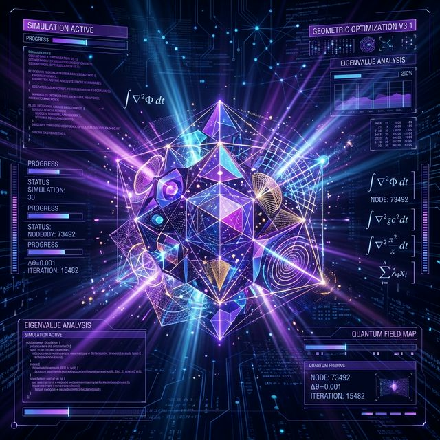
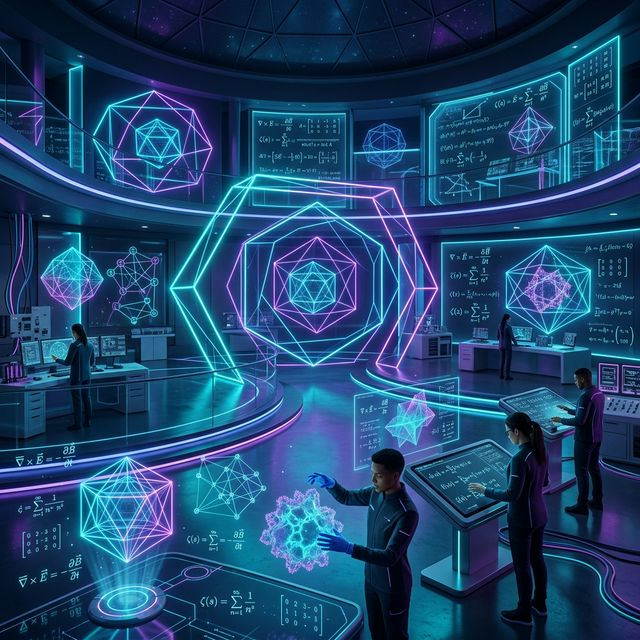
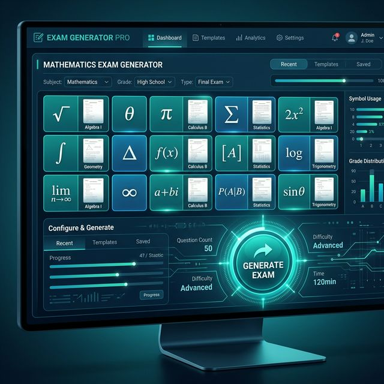
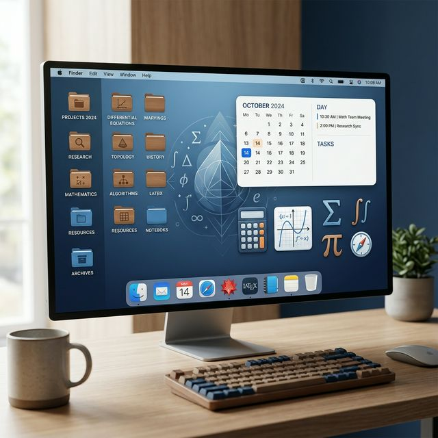
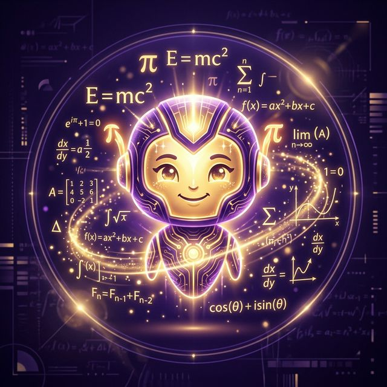

AI PoweredMô phỏng
Trợ lý tạo mô phỏng
Tạo các mô phỏng trực quan, sinh động cho các khái niệm Toán học trừu tượng chỉ với 1 câu lệnh AI.
Sử dụng ngayCông cụ AI đắc lực giúp giáo viên nâng tầm giảng dạy, tiết kiệm thời gian và tạo ra những trải nghiệm học tập đột phá cho học sinh.
Bộ công cụ chuyên biệt tối ưu cho mọi quy trình dạy học Toán

AI PoweredTạo các mô phỏng trực quan, sinh động cho các khái niệm Toán học trừu tượng chỉ với 1 câu lệnh AI.
Sử dụng ngay
Thí nghiệmKhông gian thí nghiệm Toán học tương tác, giúp học sinh khám phá kiến thức qua trải nghiệm thực tế.
Sử dụng ngayCông cụ hỗ trợ chuyển đổi và trích xuất nội dung từ PDF một cách nhanh chóng.
Sử dụng ngay
Chuyên nghiệpTự động hóa quy trình thiết lập ma trận, bản đặc tả và sinh đề thi chuẩn kiến thức kĩ năng.
Sử dụng ngayHệ thống biên soạn đề thi bám sát các công văn và quy chuẩn mới nhất của Bộ Giáo dục.
Sử dụng ngayỨng dụng tổ chức trò chơi Rung chuông vàng sôi động, giúp ôn tập kiến thức một cách hào hứng.
Sử dụng ngay
Quản lýThư ký số giúp giáo viên soạn giảng và lưu trữ giáo án một cách khoa học và thông minh.
Sử dụng ngayCổng thông tin chia sẻ kiến thức, tài liệu và các bài giảng tâm huyết dành cho học sinh.
Sử dụng ngay
Next-Gen AINgười bạn đồng hành AI thông minh, hỗ trợ giáo viên giải đáp thắc mắc và xử lý công việc 24/7.
Sử dụng ngayChào các bạn, tôi là Thùy Linh - một giáo viên đam mê ứng dụng công nghệ trực quan vào giảng dạy môn Toán.
Hệ sinh thái này ra đời với mục tiêu chia sẻ những công cụ AI mạnh mẽ nhất mà tôi đã phát triển, giúp đồng nghiệp giảm bớt áp lực công việc hành chính và tập trung tối đa vào việc truyền cảm hứng cho học sinh.
Tiên phong ứng dụng AI trong Giáo dục Toán học
Kết nối để nhận thêm nhiều tài liệu và công cụ hữu ích.